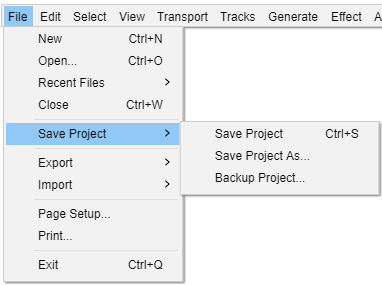

File Menu: Save Project
The current zoom level is saved in the project when you save the project. When a saved project is opened, it should automatically be zoomed to the same place and zoom level as when you saved it.
Note that Audacity projects only work in Audacity, they cannot be read and played by other applications.}}
- 
Save Project Ctrl + S
Saves the current Audacity Project in uncompressed, lossless quality using the AU container format. An AUP project file is created, along with a folder with the same name as the AUP file that contains the project's audio data. For example, if you save a project as chanson.aup, a folder called chanson_data will contain the audio data files.
Save Project As...
Same as "Save Project" above, but allows you to save a copy of an open project to a different name or location. This can be useful if you want to preserve a snapshot of the state of a project at a particular time, then proceed to make further changes to the new renamed project you just saved.
If you "Save Project As..." with a new name, the project window then displays the project name you just "saved as". The project window displaying the project as previously named is closed in its last saved state, but can be reopened as required.
| You can use "Save Project As..." to overwrite an existing project - but you will be given a warning message requesting that you confirm that you really want to do that, and please note that for safety reasons this warning cannot be turned off. |
Save Lossless Copy of Project...
Saves a copy of the current Audacity Project in uncompressed, lossless quality, leaving the current project open for you to continue working on it.
All audio in the project is rendered to 32-bit float WAV files, thus making the copy self contained (removing any dependencies on any audio files outside of the project). Then when Audacity is used to reopen the lossless copy project the WAV files will be read and copied into the project as ".AU" block files (the normal format for a project's audio data). But note that the WAV files will remain in your project's data folder as safety copies.
| This is the best way to make safety, staged, copies of your project as you work on it. |
Limitations: When a "Lossless Copy" is made, if there are any envelopes in the project, rendering the audio tracks will apply the envelopes to the tracks. This is intentional as it ensures that the WAV files will sound like they did in the project, even if the project's ".AUP" file is lost or damaged. The downside is that volume changes created by envelopes become permanent in the copy of the project (this does not affect the original project, only the saved copy).
Save Compressed Copy of Project...
Saves a copy of your project in the compressed Ogg Vorbis format, each track being saved as a separate OGG file. When you quit Audacity you may still be prompted about saving changes. Saving changes would save a separate, standard uncompressed project as above, so if you do not want that you can quit Audacity without saving.
The resulting _data folder for the project is about eight times smaller than that created using either "Save Project" command, so this may be useful for sending projects to others. There will be some resulting loss of quality. Note that the quality loss will be increased each time a compressed project is resaved as a compressed project (for example, if you send a compressed project to someone else, and they then edit it and send it back to you as a compressed project).
Most project data will be retained, including labels, gain and pan settings, track positions on the timeline, track order and metadata. Clips will not be retained - spaces between clips will be converted to silence. Volume envelopes present when saving will be rendered, but the actual envelope points will be lost.
Opening a compressed project will be slower than opening a standard project, because the OGG files in the _data folder will be decompressed into Audacity's AU file format in order to work with the data. The AU files will be in a separate folder inside the _data folder. The OGG files will remain in the _data folder after opening the project, but they can be deleted to save disk space. Similarly when sending a saved compressed project to someone, you can delete any folders containing AU files that are inside the _data folder, because all the necessary data is in the AUP file and the OGG file(s).